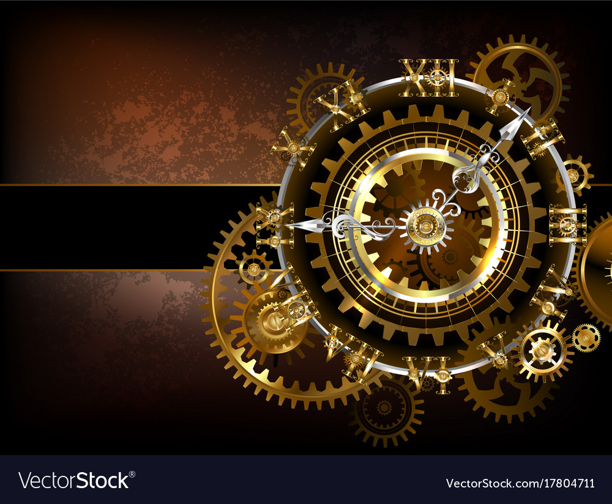

<section class="timer-container">
    <div>
        <mat-card class="timer-card">
            <mat-card-header>

                <section>
                    <div>
                        <h1>Remaining : {{stepsMins}}:{{stepsSeconds}}</h1>
                    </div>
                </section>

            </mat-card-header>
            
            <mat-card-content>
                <section>
                    <section>
                        <div>
                            <span class="text-small">0</span>
                            <mat-slider min="0" max="60" step="1" [value]="stepsMins" thumbLabel
                                (change)="updateSettingMinutes($event)" (input)="moving($event)">
                            </mat-slider>
                            <span class="text-small">60 (mins)</span>
                        </div>
                    </section>
                    <section>
                        <div>
                            <span class="text-small">0</span>
                            <mat-slider min="0" max="59" step="1" [value]="stepsSeconds" thumbLabel
                                (change)="updateSettingSeconds($event)">
                            </mat-slider>
                            <span class="text-small">59 (Seconds)</span>
                        </div>
                    </section>

                </section>
            </mat-card-content>
            <mat-card-actions>
                <button mat-raised-button color="primary" (click)="started()" *ngIf="!isStarted">Start</button>
                <button mat-raised-button (click)="stopped()" *ngIf="isStarted">Stop</button>

            </mat-card-actions>
        </mat-card>
    </div>
</section>